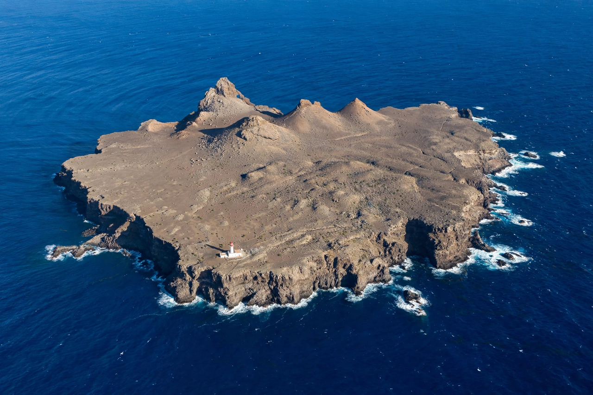

The Selvagens Islands (Portuguese: Ilhas Selvagens, "Savage Islands") are a small Portuguese archipelago in the North Atlantic Ocean, lying about 160 kilometres (100 mi) north-northeast of the Canary Islands and about 300 kilometres (190 mi) south of Madeira, to which they administratively belong. The archipelago consists of two main islands — Selvagem Grande and Selvagem Pequena — and several islets, including the Ilhéu de Fora. They are among the most remote and least disturbed island ecosystems in the Atlantic.
| Selvagens Islands | |
|---|---|
 | |
| Country | Portugal |
| Region | Madeira |
| Total islands | 2 main + islets |
| Area | 2.73 km² |
| Status | Nature reserve |
| Permanent population | None (wardens only) |
The islands are the eroded peaks of ancient volcanoes rising from deep water. Selvagem Grande has a plateau about 1.35 km² in extent ringed by steep cliffs. The Selvagens are a nationally protected nature reserve (since 1971) and one of the most important seabird sanctuaries in Macaronesia: they host the world's largest known colony of Cory's shearwaters, along with Bulwer's petrels, white-faced storm petrels, and Madeiran storm petrels. The islands also support endemic plants, invertebrates (including endemic spiders and snails), and two endemic lizard taxa. Access is strictly controlled and requires special permission.
The islands were officially discovered by the Portuguese navigator Diogo Gomes in 1438, though they may have appeared on earlier charts. Prince Henry the Navigator granted them to the Order of Christ, and they later passed to private Madeiran families. For centuries they were visited for orchil dye lichen, barilla, and seabird harvesting. A lighthouse was established on Selvagem Grande (Pico da Atalaia) in 1977. Sovereignty was occasionally discussed with Spain because of the islands' proximity to the Canaries, but they are internationally recognized as Portuguese; their status matters for the extent of the maritime exclusive economic zone around them.